큐베이스 설치후 프로그램을 열기하면 첫번째로 나타나는 화면입니다.
1번 테두리는 작업물을 어디에 저장할것인지 위치를 묻는곳입니다.
작업물 저장위치를 선택한뒤에 2번 테두리의 새창열기를 클릭합니다.
처음으로 설정할 화면은 아래 이미지처럼 studio 메뉴를 클릭하면
하위메뉴중에서 studio setup 을 클릭합니다.
새로운 창이 뜨면 왼쪽의 오디오시스템 항목을 클릭하면
오른쪽의 2번 테두리에서 삼각형을 클릭하면 하위메뉴들이 나타납니다.
이곳에서 본인의 오디오 인터페이스 제품을 선택해준뒤에
OK 누르시면 됩니다.
다음으로 다시 studio 메뉴를 클릭하여 하위메뉴중에 Audio Connections
클릭합니다.
우측의 화살표부분을 클릭하면 하위메뉴중에 본인의 오디오 인터페이스
제품을 선택하면 됩니다.
이번에는 아래 그림처럼 Outputs 항목을 선택한뒤
아래쪽에서 본인의 오디오 인터페이스 제품을 선택하면 됩니다.
이번에는 상단 메뉴에서 Project 항목을 클릭하여 맨 아래쪽에
project Setup 항목을 클릭합니다.
아래 이미지처럼 새창이 열리면 하단에 빨간 테두리처럼
항목마다의 삼각형을 클릭하여 그림과같은 설정값으로
바꾸어 놓고 아래쪽 OK를 클릭합니다.
참고로 다른 비트나 샘플래이트로 설정값이 있지만
화면처럼 설정값을 하면 프로그램의 원활한 운영에 도움이 되고,
이렇게 설정값을 해도 사용에는 아무런 문제 없습니다.
설정이 끝난뒤 화면 구조는 아래 이미지와 같습니다.
여기서 우측 상단 빨간테두리에 보시면 3가지탭에 하얀색으로
표시 되어 있습니다. 왼쪽부터 하나씩 클릭해보면
가장 왼쪽 하얀색 탭을 클릭하면 좌측의 빨간색 테두리가
보였다 안보였다 합니다.
가운데 하얀색 탭을 클릭을 여러번 해보면 아래쪽 하단 빨간색 테두리가
보였다 안보였다 합니다.
세번째 하얀색 탭을 클릭해보면 우측의 빨간색 테두리 창이
보였다 안보였다 할겁니다.
각각의 작업화면을 보이게,,,혹은 안보이게 하는 역활입니다.
기억하시기 바랍니다. 각각의 쓰임새가 있습니다.
앞으로 작업을 하나씩 실제로 해가면서 설명해도 되니까
이번 강좌에서는 넘어 가겠습니다.
아래쪽 이미지설명하겠습니다.
모든 설정작업이 끝나면
그림처럼 본인의 컴퓨터에 보관하던
오디오 파일 하나를 불러 보겟습니다.
이미지처럼 클릭을 하면 나타나는 하위메뉴에서
Add Audio Track 을 클릭합니다.
아래 그림처럼 트랙설정창이 뜹니다.
빨간테두리처럼 삼각형을 클릭하여 Stereo in 으로 선택하고,
아래쪽도 그림처럼 선택한뒤 Add Track 버튼을 누릅니다.
아래쪽 그림처럼 오디오파일을 불러올수 있는
트랙이 하나 만들어졌습니다.
이제 오디오파일을 불러올 차례입니다.
세로로 빨간색 테두리는 인티케이터 입니다.
이부분을 첫부분에 가져다 놓아야 합니다.
그러기 위해서는 키보드에서 우측 하단의
점하나 찍힌 DEL 키를 누르시면
자동으로 첫부분에 위치하게 됩니다.
여기까지 큐베이스 설치후 설정값 정해주는것과
첫 화면에서 오디오파일 불러오는 트랙 하나를
생성해봤습니다.
다음시간에는 트랙에 오디오파일을 실제로
불러오는 부분을 강좌하겠습니다.

1번 테두리는 작업물을 어디에 저장할것인지 위치를 묻는곳입니다.
작업물 저장위치를 선택한뒤에 2번 테두리의 새창열기를 클릭합니다.
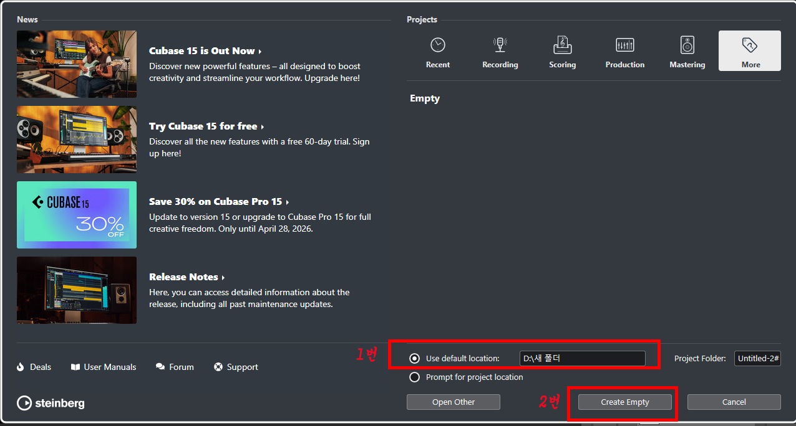
하위메뉴중에서 studio setup 을 클릭합니다.
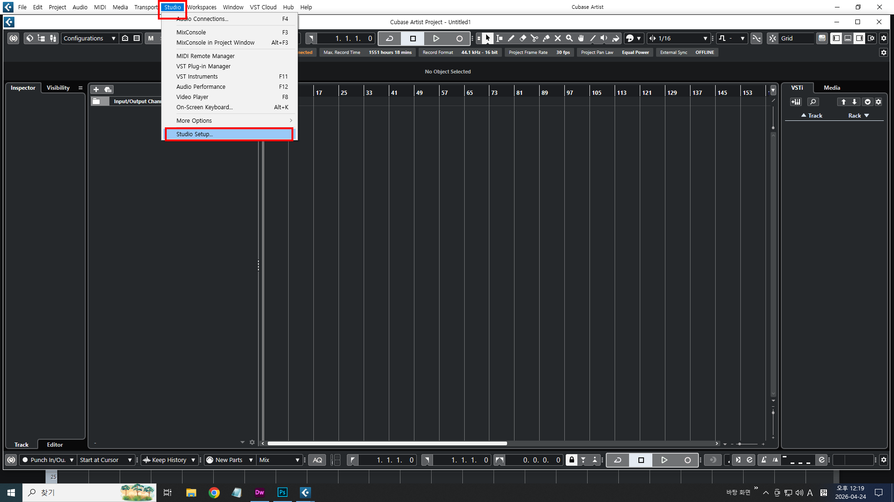
오른쪽의 2번 테두리에서 삼각형을 클릭하면 하위메뉴들이 나타납니다.
이곳에서 본인의 오디오 인터페이스 제품을 선택해준뒤에
OK 누르시면 됩니다.
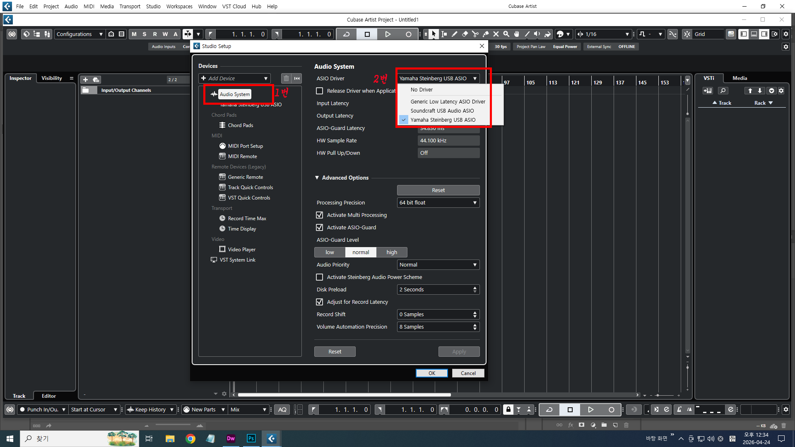
클릭합니다.
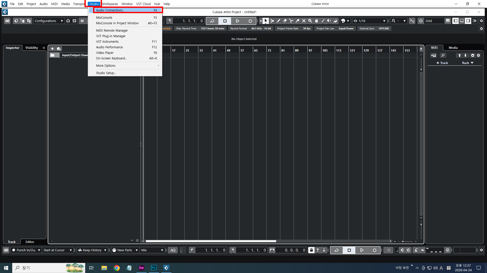
왼쪽의 Inputs 항목을 선택합니다.우측의 화살표부분을 클릭하면 하위메뉴중에 본인의 오디오 인터페이스
제품을 선택하면 됩니다.
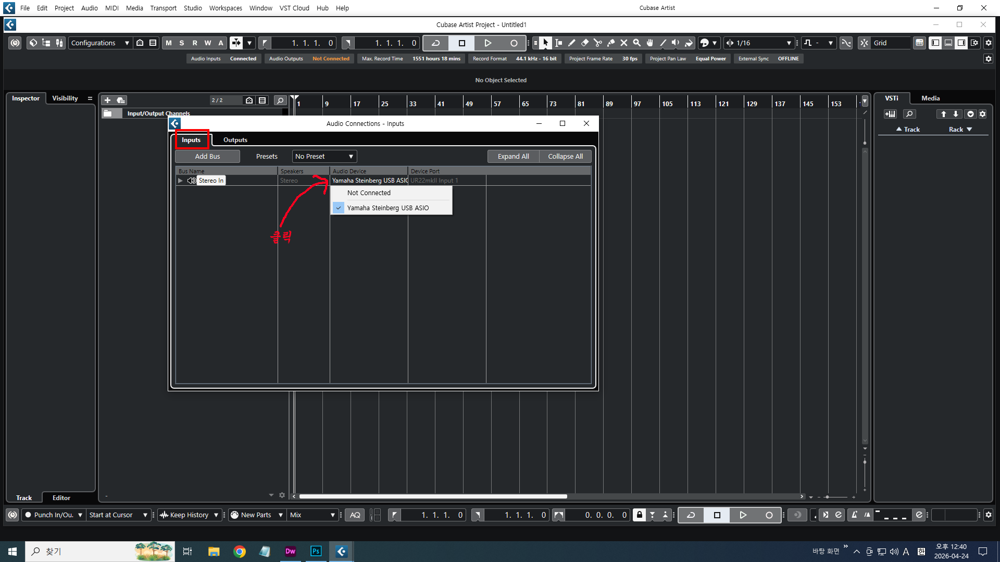
아래쪽에서 본인의 오디오 인터페이스 제품을 선택하면 됩니다.
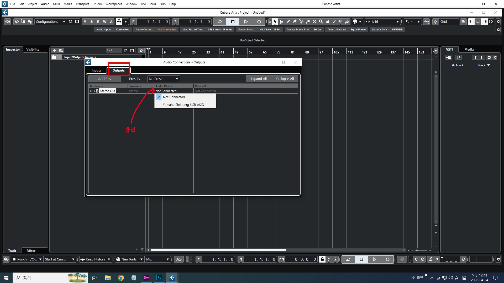
project Setup 항목을 클릭합니다.
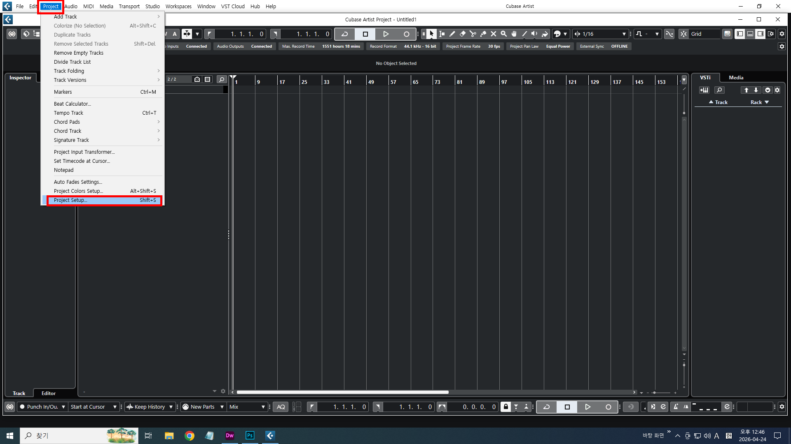
항목마다의 삼각형을 클릭하여 그림과같은 설정값으로
바꾸어 놓고 아래쪽 OK를 클릭합니다.
참고로 다른 비트나 샘플래이트로 설정값이 있지만
화면처럼 설정값을 하면 프로그램의 원활한 운영에 도움이 되고,
이렇게 설정값을 해도 사용에는 아무런 문제 없습니다.
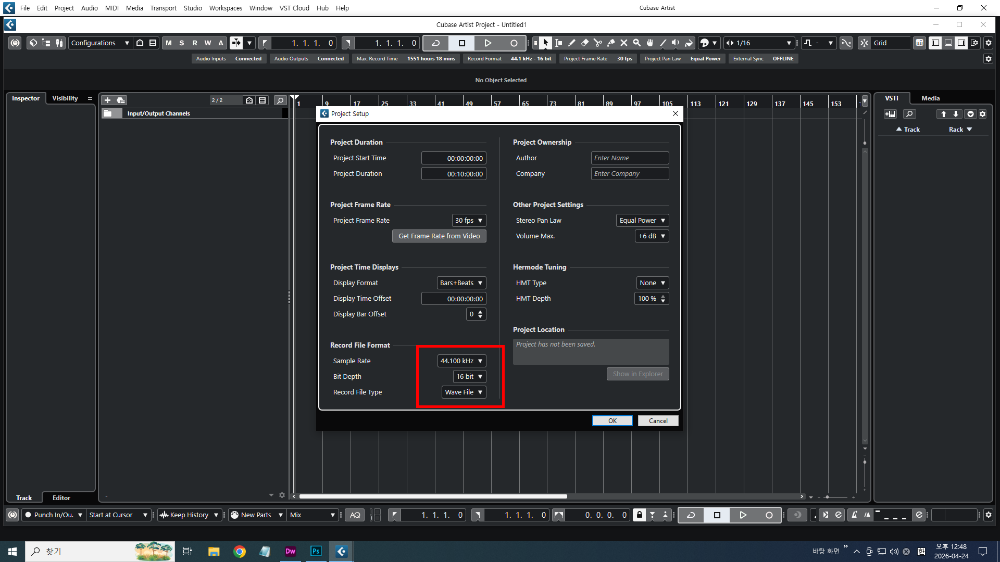
여기서 우측 상단 빨간테두리에 보시면 3가지탭에 하얀색으로
표시 되어 있습니다. 왼쪽부터 하나씩 클릭해보면
가장 왼쪽 하얀색 탭을 클릭하면 좌측의 빨간색 테두리가
보였다 안보였다 합니다.
가운데 하얀색 탭을 클릭을 여러번 해보면 아래쪽 하단 빨간색 테두리가
보였다 안보였다 합니다.
세번째 하얀색 탭을 클릭해보면 우측의 빨간색 테두리 창이
보였다 안보였다 할겁니다.
각각의 작업화면을 보이게,,,혹은 안보이게 하는 역활입니다.
기억하시기 바랍니다. 각각의 쓰임새가 있습니다.
앞으로 작업을 하나씩 실제로 해가면서 설명해도 되니까
이번 강좌에서는 넘어 가겠습니다.
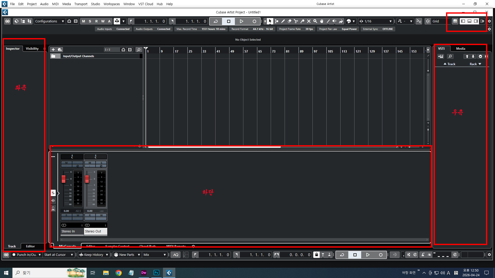
모든 설정작업이 끝나면
그림처럼 본인의 컴퓨터에 보관하던
오디오 파일 하나를 불러 보겟습니다.
이미지처럼 클릭을 하면 나타나는 하위메뉴에서
Add Audio Track 을 클릭합니다.
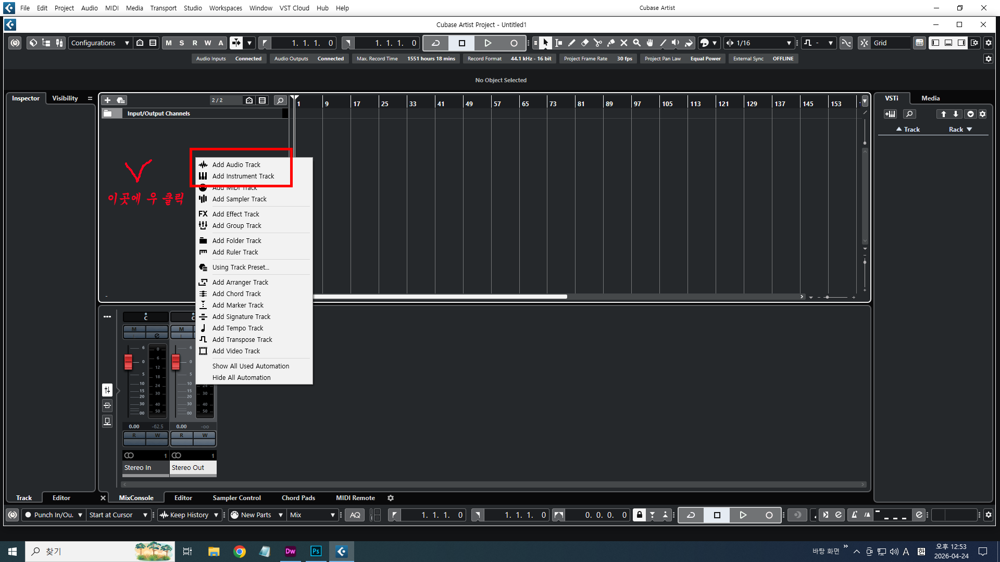
빨간테두리처럼 삼각형을 클릭하여 Stereo in 으로 선택하고,
아래쪽도 그림처럼 선택한뒤 Add Track 버튼을 누릅니다.
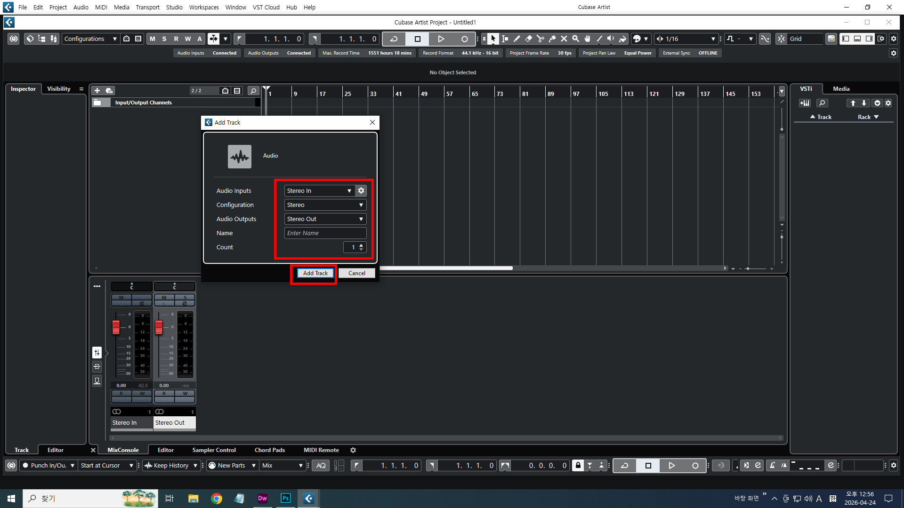
트랙이 하나 만들어졌습니다.
이제 오디오파일을 불러올 차례입니다.
세로로 빨간색 테두리는 인티케이터 입니다.
이부분을 첫부분에 가져다 놓아야 합니다.
그러기 위해서는 키보드에서 우측 하단의
점하나 찍힌 DEL 키를 누르시면
자동으로 첫부분에 위치하게 됩니다.
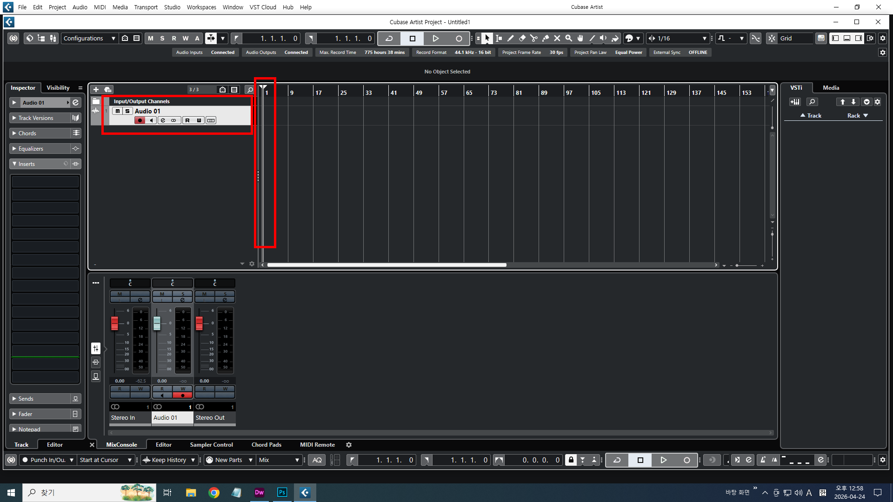
첫 화면에서 오디오파일 불러오는 트랙 하나를
생성해봤습니다.
다음시간에는 트랙에 오디오파일을 실제로
불러오는 부분을 강좌하겠습니다.
닫기 ×